01
El trabajo, llevado al 3D.
Escenarios realistas para observar, decidir y aplicar lo aprendido.
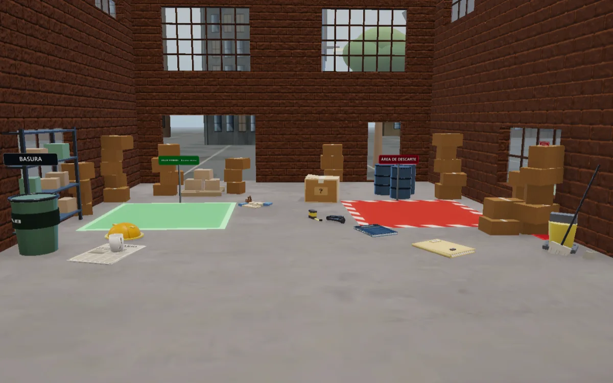
CAPTURA PENDIENTEAPRENDER HACIENDO, EN 3D
CLASSPLAY / POR BITPLAYTu equipo practica situaciones reales sin riesgo.
Tú ves quién aprendió.
CAPACITACIÓN PARA EMPRESAS
Desde el navegador.
Sin instalar nada.
Una situación cambia.
Tu criterio cuenta.
01 / EL SISTEMA
Una experiencia clara para quien aprende.
Una vista completa para quien capacita.
Escenarios realistas para observar, decidir y aplicar lo aprendido.

CAPTURA PENDIENTERegistro con RUT o ficha y acceso a los cursos que activa la empresa.
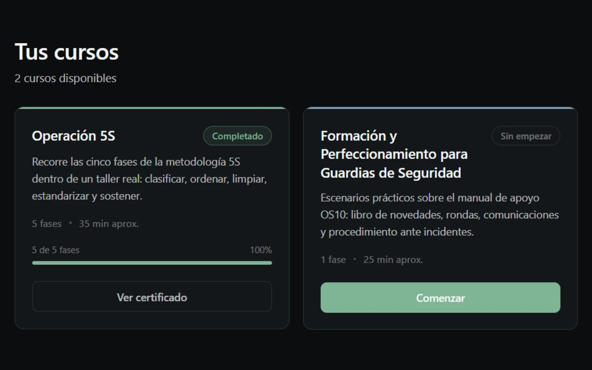
CAPTURA PENDIENTECursos, estados y avance individual desde el panel de la empresa.
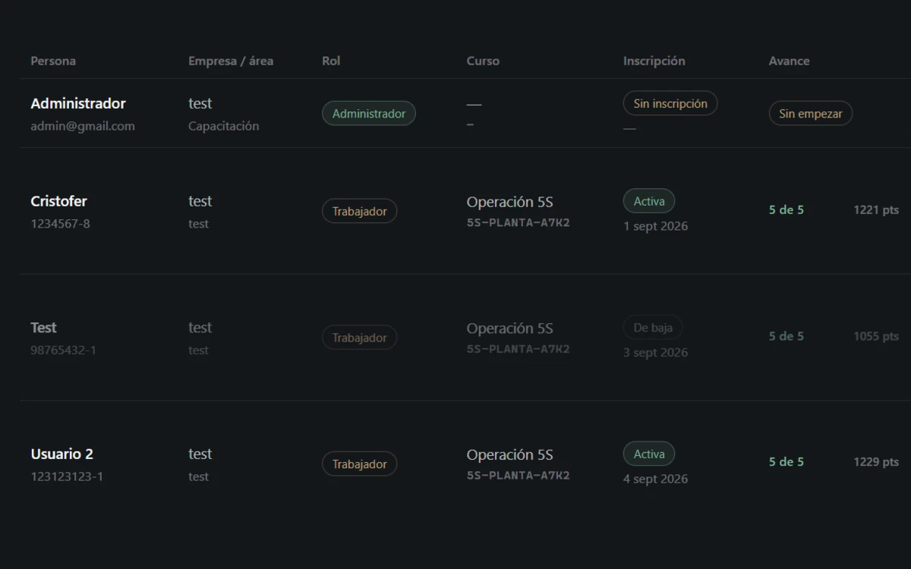
CAPTURA PENDIENTEAl completar el curso, un certificado con código de verificación.
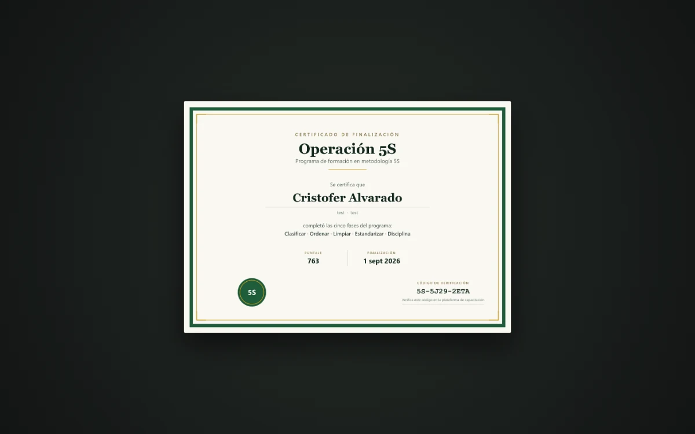
CAPTURA PENDIENTEPENSADO PARA Operaciones / Capacitación / Recursos Humanos
02 / CURSOS DISPONIBLES
Después de un tutorial inicial, tu equipo aplica una S por fase. Del puesto desordenado a una auditoría sorpresa, cada acción tiene un propósito.
Decidir qué se queda, qué se observa con tarjeta roja y qué se va.
Darle a cada cosa un lugar y hacer visible cuando algo falta.
Limpiar aceite y polvo. Encontrar también qué los produce.
Dejar señales e instrucciones que otro operario pueda seguir.
Resolver una auditoría contra reloj con el checklist propio.
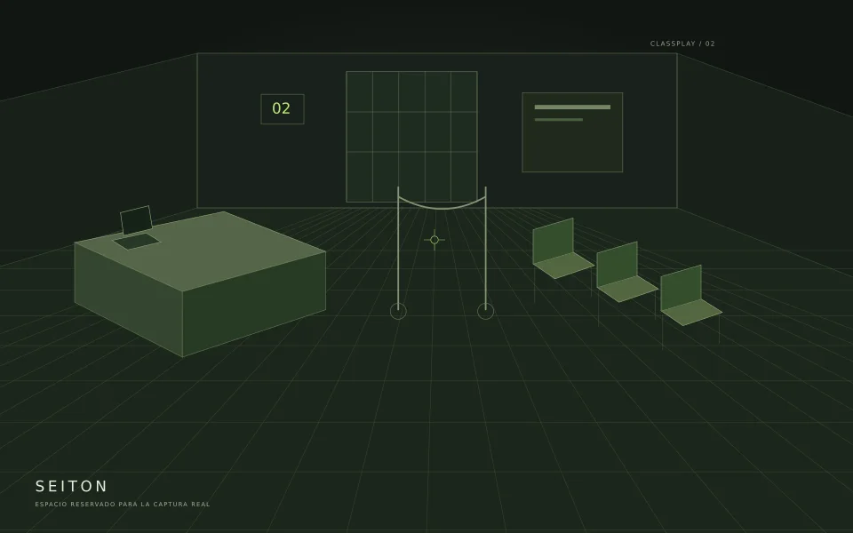
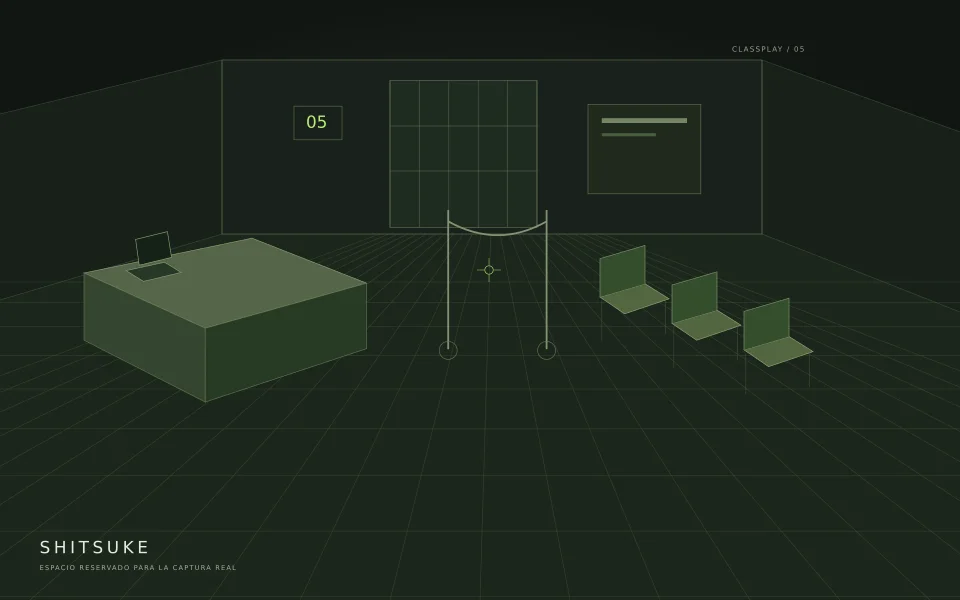
Tres escenarios. Turnos completos. Tu equipo practica cómo actuar y se evalúa cada decisión.
Práctica complementaria basada en el manual de apoyo OS10. No otorga certificación OS10.
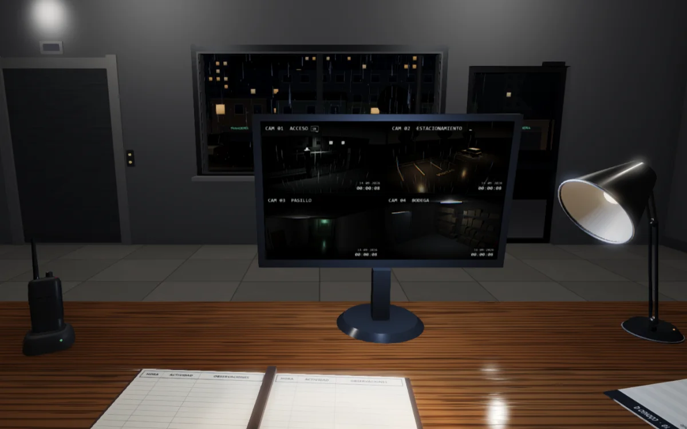
01 / 03CAPTURA PENDIENTERegistrar hechos, sin opiniones ni borrones. A las 03:20, el supervisor revisa el libro de novedades.
Observación y registro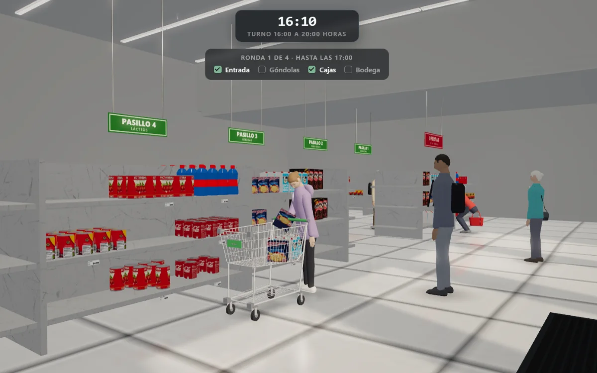
02 / 03CAPTURA PENDIENTERevisar accesos, góndolas, cajas y bodega con los avisos de central. Distinguir una señal de una suposición.
Criterio y comunicación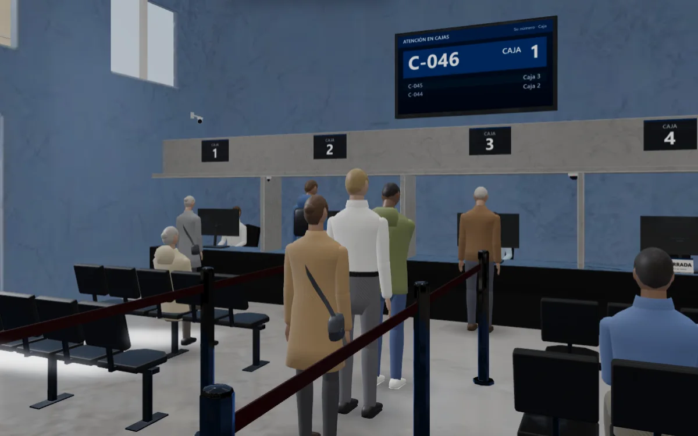
03 / 03CAPTURA PENDIENTEUna mañana normal termina en un asalto. Decidir cuándo no reaccionar, observar y declarar ante Carabineros solo lo que se vio.
Autocontrol y declaración de hechosCada escenario tiene una nota. Se aprueba desde 60.
03 / PANEL DE LA EMPRESA
Administra accesos, acompaña a tu equipo
y consulta los resultados en un solo panel.
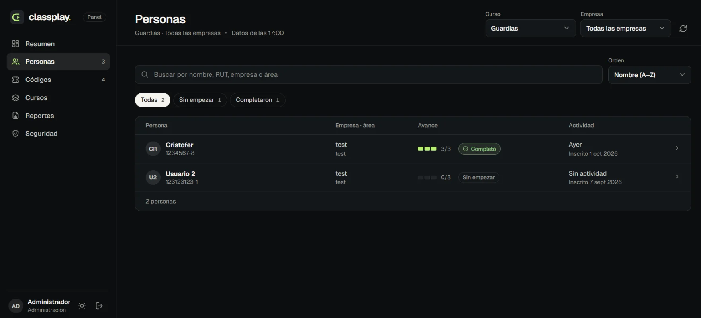
CAPTURA PENDIENTE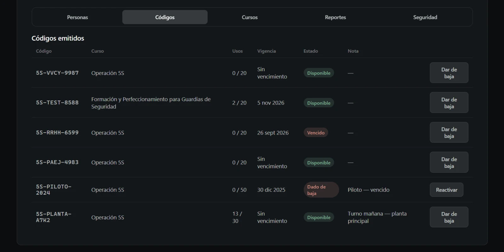
CAPTURA PENDIENTE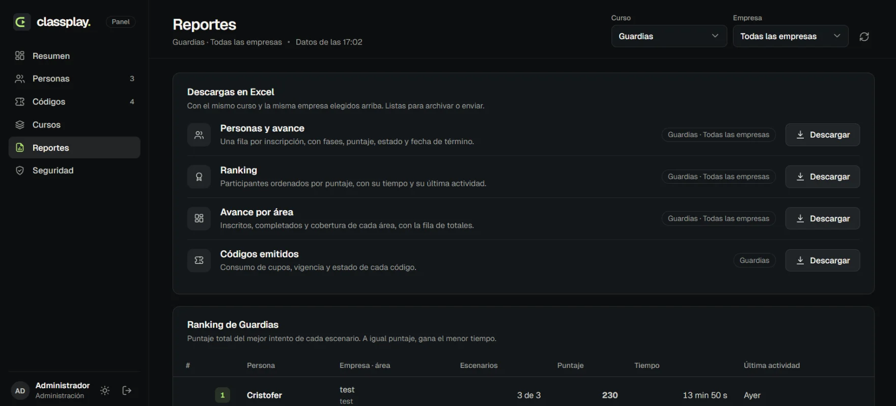
CAPTURA PENDIENTE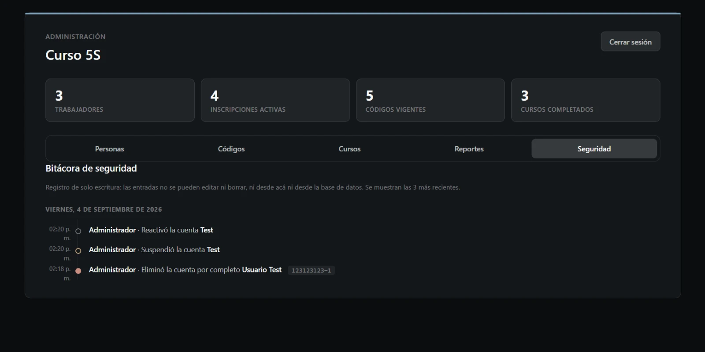
CAPTURA PENDIENTE04 / CÓMO FUNCIONA
Los accesos se organizan por curso, con cupos y vigencia. Tu equipo recibe el enlace y su código.
Se registra con RUT o ficha, activa su curso y resuelve los escenarios desde el navegador.
Consulta avances, resultados y certificados. Identifica quién empezó, quién continúa y quién completó.
VERIFICACIÓN DE CERTIFICADOS
Ingresa su código para verificarlo en la plataforma.
El certificado acredita la finalización del curso en ClassPlay. No constituye un título oficial.